Step 1. Sign in
 1
1- 1. Sign in
Click: Type the analyst account (g.ang / analyst-demo) and click Sign in.
You see: The Analyst Workstation opens.
Why (SOC): Each action is recorded under your name.
Built from an automated run of soc-flow.spec.ts on a copy of the demo data. Every screenshot is
from that run, and the run checked the database after each step. Orange boxes mark what to click or read;
their positions were measured by the browser, not drawn by hand.
1Click: Type the analyst account (g.ang / analyst-demo) and click Sign in.
You see: The Analyst Workstation opens.
Why (SOC): Each action is recorded under your name.
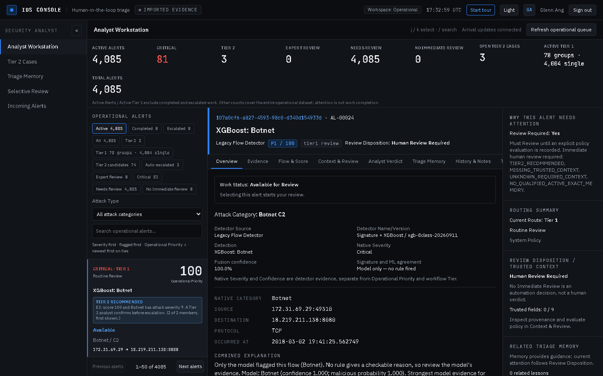
123Click: Look at the view tabs. Click Tier 2 candidates or Tier 1.
You see: Counts per view. Tier 1 shows groups and singles apart. Auto-escalated = 3.
Why (SOC): Tier 1 and Tier 2 staff each open their own list in one click. 996 flagged alerts became 81 items.
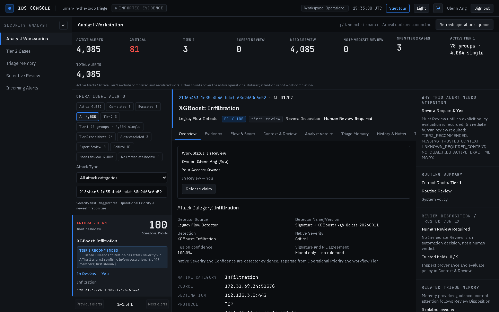
12Click: Click a row in the list.
You see: The row says In Review — You. The work panel says Your Access: Owner.
Why (SOC): Other analysts see who owns it and do not duplicate the work.
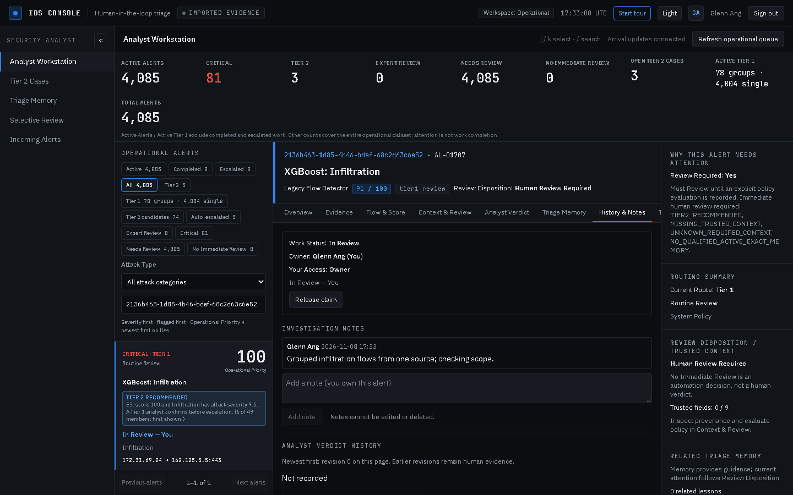
12Click: Open History & Notes, type a note, click Add note.
You see: The note shows with your name and time. It cannot be edited or deleted.
Why (SOC): A shift lead can follow the reasoning later.
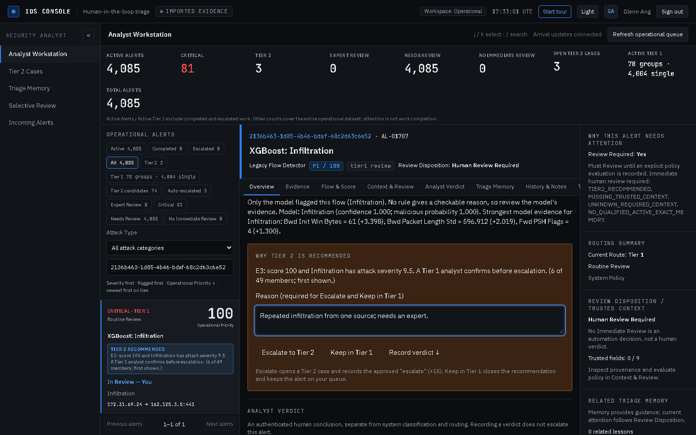
123Click: Read the brown panel. Type a short Reason. Click Escalate to Tier 2 or Keep in Tier 1.
You see: The reason the system gives (here: score 100, Infiltration, severity 9.5, 6 of 49 members). Escalate stays off until you type a reason.
Why (SOC): The machine recommends; a human decides and states why.
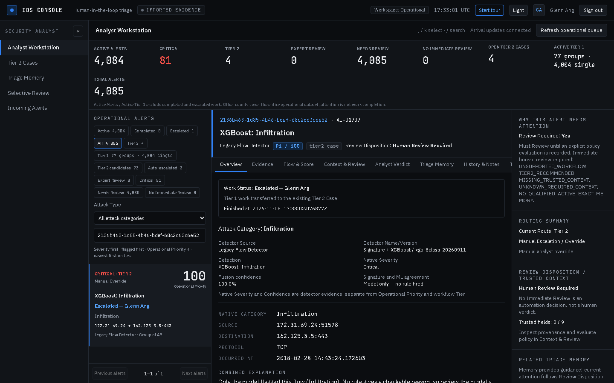
1Click: Nothing to click.
You see: Work status Escalated. A Tier 2 case now exists. The alert leaves the Active list.
Why (SOC): Tier 1 is done with it; the expert takes over.
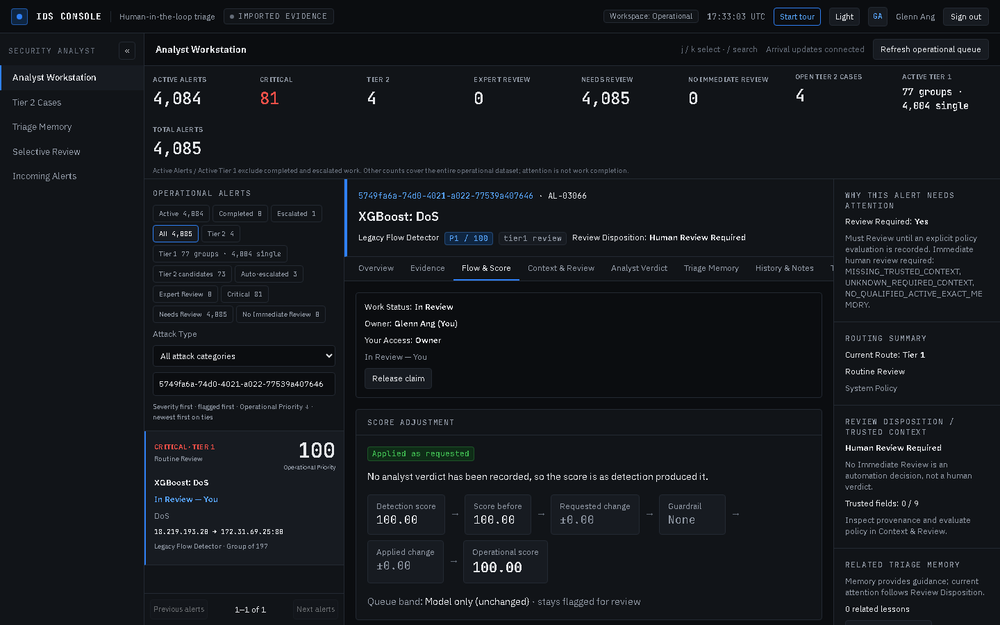
1Click: Open a routine group, then the Flow & Score tab.
You see: Ports, packet counts, rule conditions and the model's top features.
Why (SOC): The analyst judges evidence, not only a score.
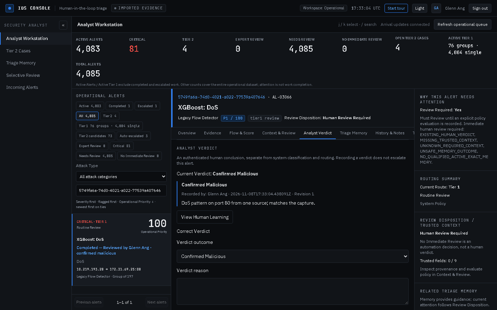
1Click: Open Analyst Verdict. Pick an outcome, type a reason, click Record Verdict.
You see: Work status Completed — Reviewed by Glenn Ang.
Why (SOC): Each outcome moves the score within the guardrails. One verdict alone does not re-rank a family (3-vote gate).
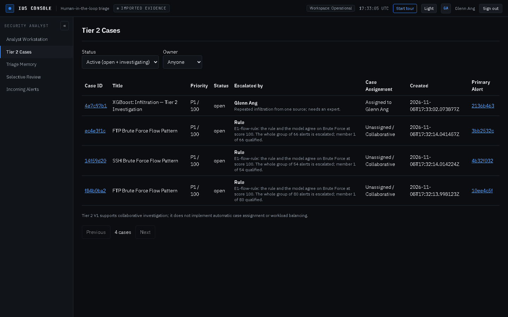
123Click: Left menu: Tier 2 Cases.
You see: Default filter Active. 3 cases say Rule with the rule sentence (auto-escalated). Your case shows Glenn Ang and your reason.
Why (SOC): The expert sees open work and who or what sent each case.
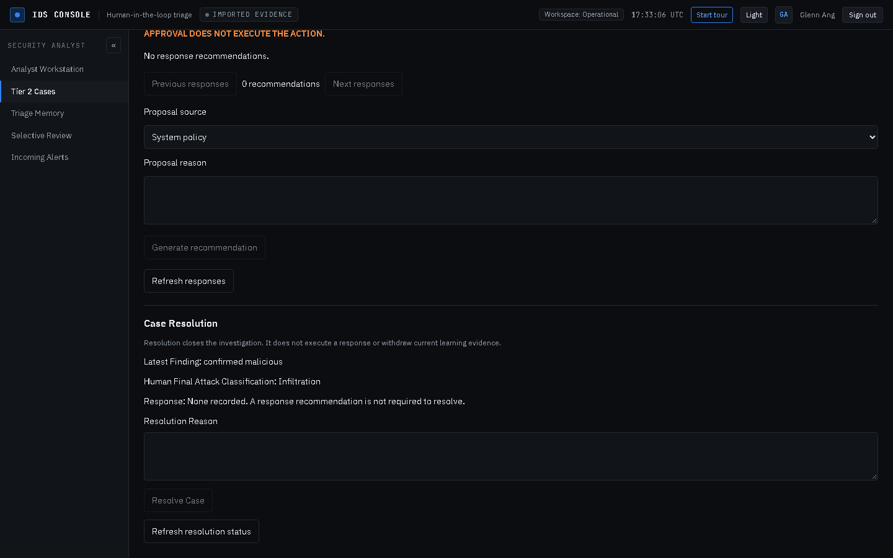
12Click: Open your case. Audit Timeline: reason, Start investigation. Investigation Conclusion: finding, class, reason, Record Investigation Conclusion.
You see: Resolve Case stays off until a conclusion exists. Then it turns on.
Why (SOC): A case cannot close without a recorded finding.
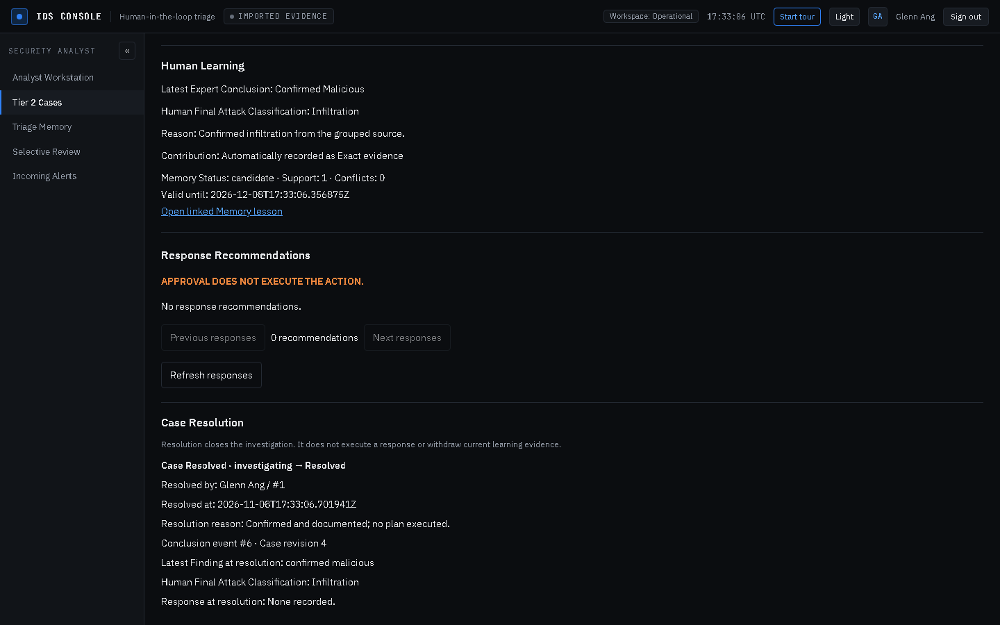
1Click: Type a Resolution Reason. Click Resolve Case.
You see: Resolved by: Glenn Ang. All edit buttons go. A resolved case leaves the Active list but stays under Status = Resolved.
Why (SOC): The record is fixed for audit. Approving a response plan never executes it.
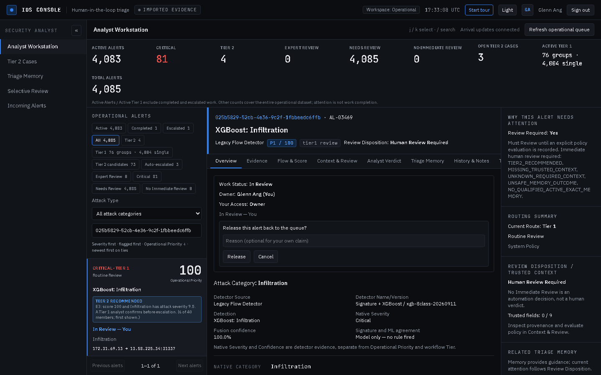
1Click: On an alert you own, click Release claim, then Release.
You see: The alert is available to others again.
Why (SOC): Shift change or wrong pick: work returns to the queue. Idle claims also expire after 15 minutes.